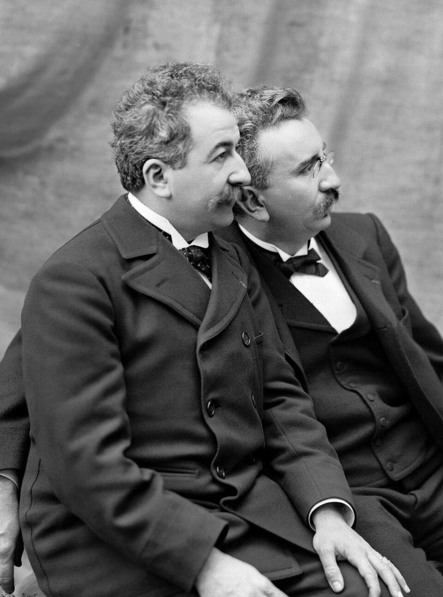

Fotografías que se mueven: los hermanos Lumière asombran a París con su cinematógrafo
En el sótano del Gran Café del bulevar de los Capuchinos, treinta y tres espectadores pagaron un franco por ver, proyectadas sobre una sábana, escenas de la vida tomadas del natural: obreras que salen de una fábrica, un jardinero regado por su propia manguera, un bebé que almuerza. Salieron convertidos en profetas.

La función se anunciaba sin estruendo y encontró la sala a medio llenar: treinta y tres curiosos bajaron esta noche al Salón Indio del Gran Café, donde los señores Auguste y Louis Lumière, fabricantes de placas fotográficas de Lyon, presentaban al público su cinematógrafo. Se apagó la luz de gas, zumbó una manivela, y sobre la tela apareció la puerta de una fábrica que se abría de verdad, con sus obreras saliendo de verdad, con sus bicicletas y su perro y su apuro de las seis de la tarde. La fotografía, ese espejo congelado, acababa de ponerse a andar.
Siguieron otros cuadros de un minuto: un jardinero regado por su propia manguera ante las carcajadas del sótano entero, una partida de naipes, un bebé al que sus padres —los propios Lumière— dan la papilla mientras tiemblan las hojas del fondo, y ese temblor de las hojas, dicen los que estaban, fue lo que más asombró: nadie había pintado nunca el viento. Al terminar, los espectadores salieron a buscar gente por el bulevar como quien ha visto un milagro y necesita testigos. El señor Méliès, ilusionista del teatro Robert-Houdin, ofreció en el acto comprar el aparato a cualquier precio; los Lumière no venden.
La fotografía animada venía gateando desde hace años: el americano Muybridge descompuso el galope de un caballo en placas sucesivas para dirimir una apuesta, y el señor Edison vende desde hace meses su kinetoscopio, una caja con mirilla donde las vistas se espían de a uno, agachado y por monedas. El hallazgo de los lioneses está en la palabra que faltaba: proyectar, convertir la visión solitaria en espectáculo de sala, y en un aparato del tamaño de una caja de sombreros que es a la vez cámara, copiadora y proyector, movido a manivela, sin la electricidad que encadena al americano a sus salones. Fue el padre, el viejo Antoine, quien volvió de ver el kinetoscopio y sentenció a sus hijos, según se cuenta, que la imagen había que sacarla de la caja.
El programa completo duró unos veinte minutos y repartió por partes iguales asombros y carcajadas: diez vistas de un minuto, cambiadas a mano, con la salida de la fábrica de Lyon como apertura y el jardinero regado como primer chiste de la historia de este arte, si arte resulta. En la puerta, un cartel pintado a las apuradas y un portero desconfiado; mañana, aseguran los mozos del café, habrá cola en el bulevar, porque los treinta y tres de esta noche salieron haciendo una propaganda de poseídos. Los hermanos, previsores, ya adiestran operadores para despachar el aparato por el mundo: antes de un año, prometen, el cinematógrafo habrá retratado Venecia, Moscú y Buenos Aires.
El padre de los inventores, hombre práctico, repite a quien quiera oírlo que el cinematógrafo es «una invención sin porvenir»: curiosidad de feria que el público agotará en una temporada. Puede ser; también puede ser que esta noche, en un sótano de París y a un franco la entrada, haya nacido el arte propio del siglo que viene, el que guardará para siempre los rostros, las multitudes y hasta el viento en las hojas. Entre el pronóstico del padre y el entusiasmo del ilusionista, este cronista, por una vez, apuesta contra el hombre práctico.